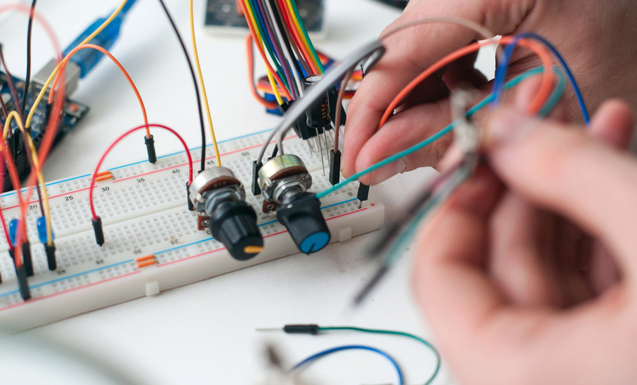
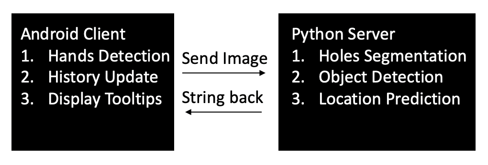
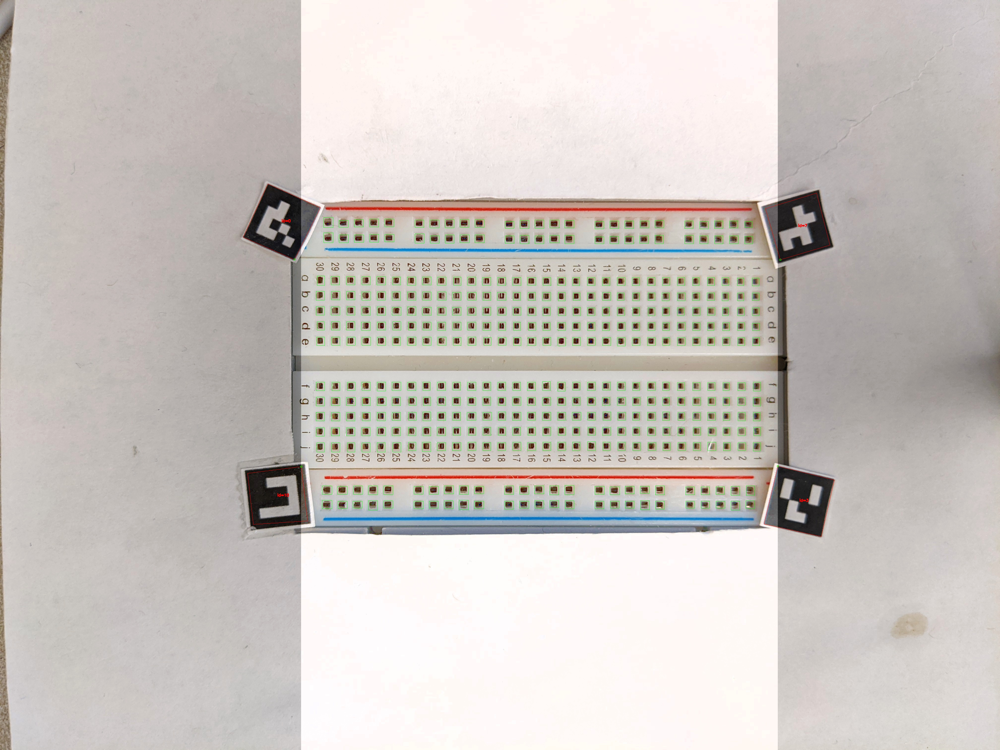
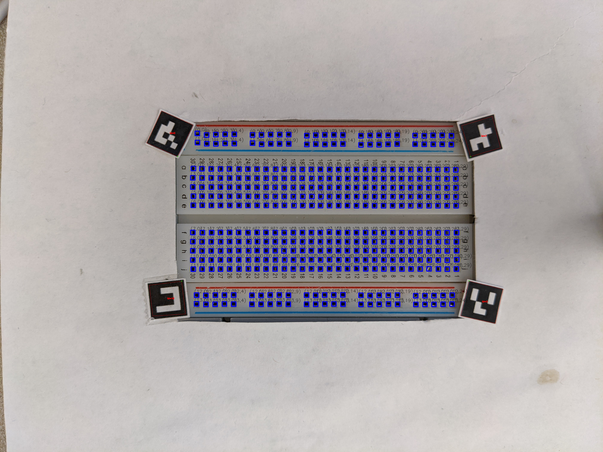
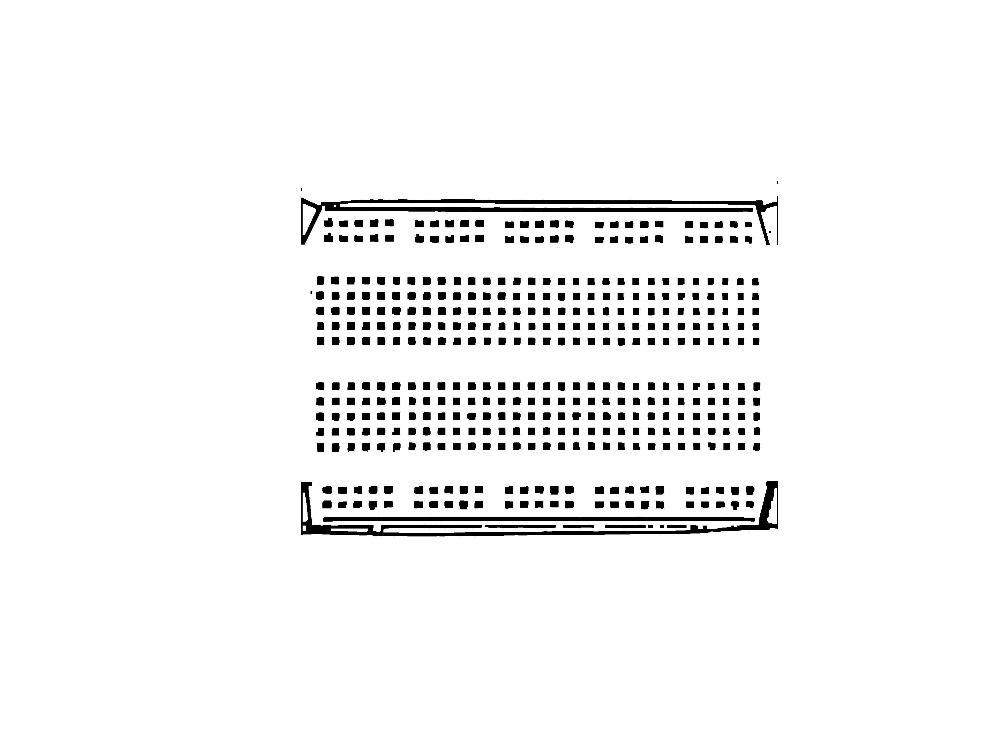
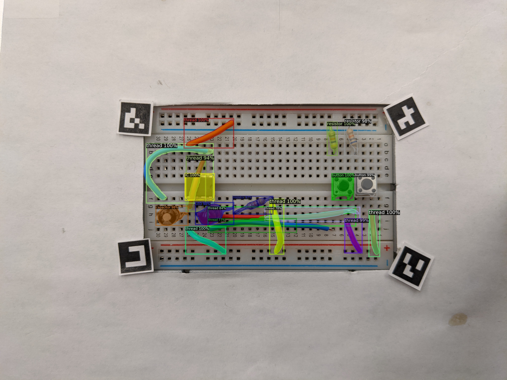

**Smartphone Programming CS165 Final Project - Ambient Circuit Assistant**
Members: Ruei-Che Chang and Te-Yen Wu
(##) Motivation
The increase in availability of electronics and the decrease of price offer wider range of people oppotunities in learning circuit prototype. However, when wanting to DIY in-situ or learn by self, novices get little chance to be under mentor's guidance. Also, though online resources can provide extensive knowledge, keeping searching and browsing is time-consuming and could cause distraction. In response, we propose Ambient Circuit Assistant, an accessible way to ambiently assist users in circuit prototyping by generating expert knowledge automatically based on the updates of the breadboard. We hope this system can offer novice users knowledgable yet smooth experience.

(##) System Structure

(##) Holes segmentation
Resolution: 4032x3024 taken by Google Pixel 4.
First, We put the paper codes to hide the numbers and characters as they are noisy to segment the holes.
Second, considering the different illumination in various environments, we always elevate the brightness to some extent so that we can yield the binary picture and then we segment each hole by its width, height and area.
Finally, we will send the coordinate of each hole to Android Client, totally 400.
Functions used: cv.adaptiveThreshold, cv.dialate, cv.erode, cv.boundingRect, cv.findContours, opencv ArUco



(##) Hands Detection
As mentioned in last section, we put the paper codes on each corner of breadboard. Once user insert or take away component, their hands will hide the codes so that we can infer whether they modify their breadboard or not. Of course, we will still update the image even the hands just cross by the breadboard.
(##) Object Detection
We use Mask-RCNN model to train 400 breadboard circuit images and test on 98 images. We have totally 20 classes of electronics. The following picture show the result of the model, where the contours of electronics can be detected.

(##) Location Guess
To find the pins of each component, we have two strategies:
First, for the long component (e.g. wire and resistor), we can get two end points simply by the most distant two points of the contour.
Second, for other given components, we simply find which holes are covered by the mask and infer the location by its specifications (e.g. button has four pins on the corners).
And of course, this algorithm depends on the mask predicted by the model. Hence, we cannot yield very satisfied results.